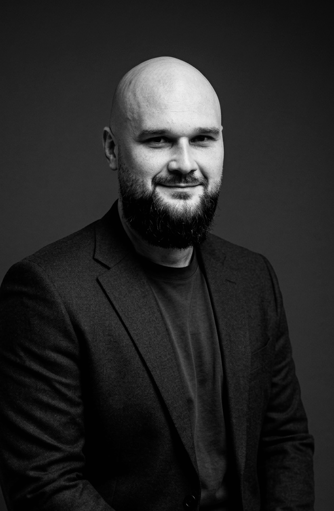
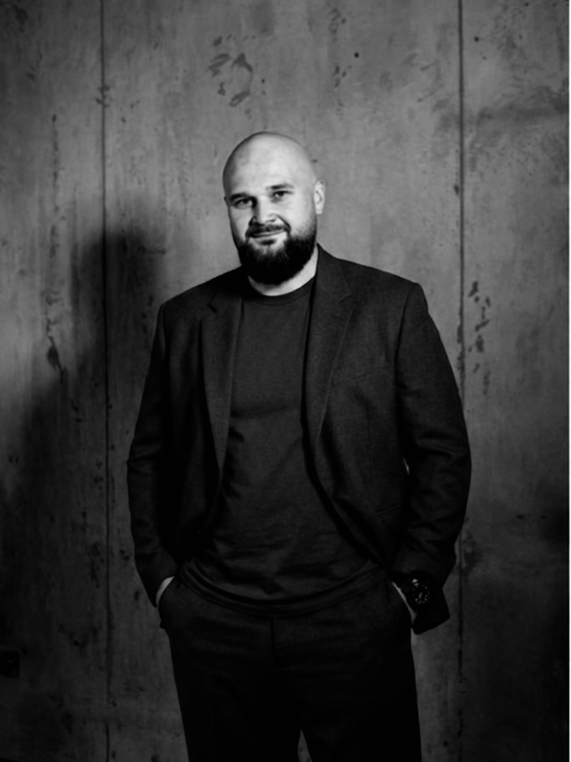
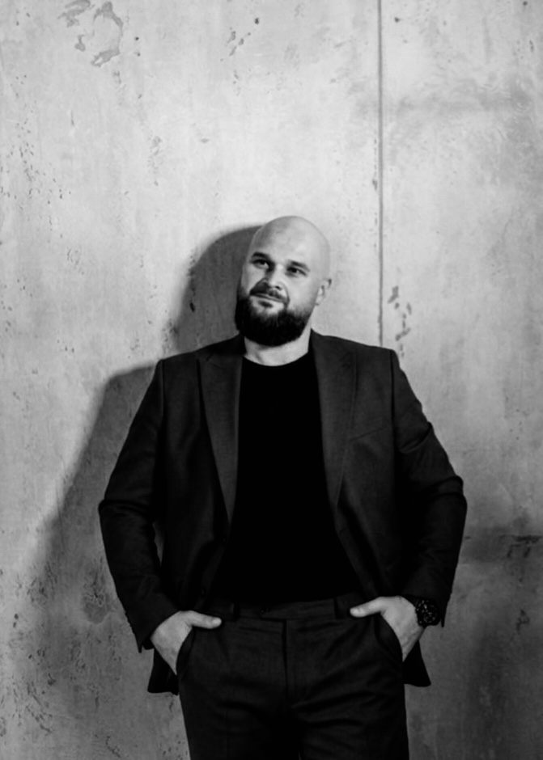
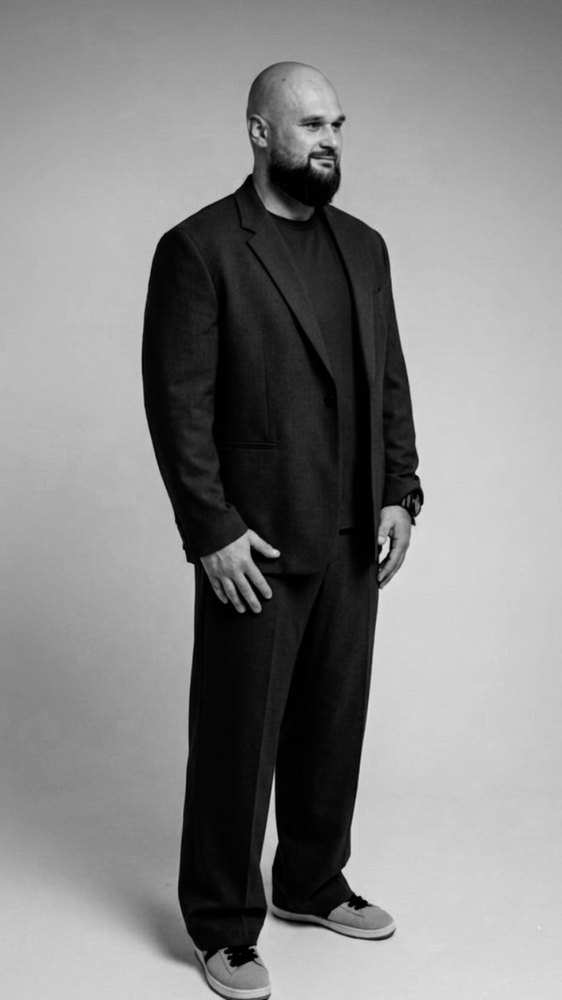
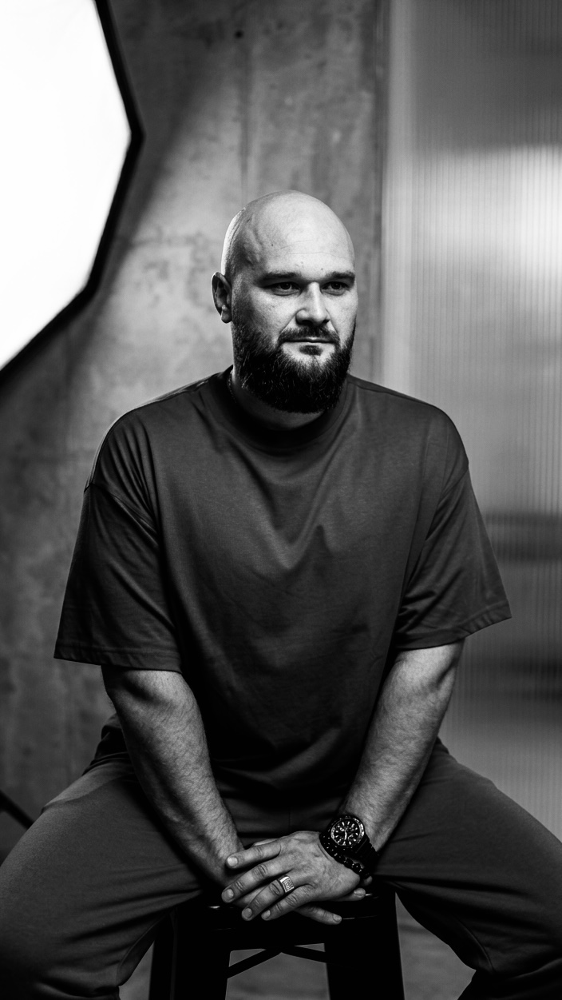

Карта психіки — персональний візуальний портрет вашої особистості: сильні сторони, тригери, сценарії, ресурси і конкретні напрями змін.

Після більшості консультацій людина йде з інсайтами. За тиждень вони тьмяніють. За місяць — забуваються. Внутрішня картина розмивається, і людина знову опиняється в точці невизначеності. Ніби нічого й не було.
Це не ваша слабкість. Це системна проблема стандартного формату психологічної роботи.

«Коли людина приходить до офтальмолога — вона отримує рецепт. Коли до кардіолога — отримує висновок. Коли приходить до психолога — найчастіше отримує лише розмову.
Я вважаю, що результат психологічної роботи має залишатися з людиною.
Тому мої клієнти отримують карту психіки.»
Карта психіки — це не гарна схема і не тест з інтернету. Це професійний аналітичний документ, створений на основі серії консультацій, глибинного інтерв'ю і — за потреби — наукових психодіагностичних методик.
Це перший раз, коли ви побачите себе цілком. Не окремі шматочки, які ви помічали в терапії чи книгах — а повну картину. Як усе це пов'язано між собою.
Карту можна переглядати через півроку — і помічати, що змінилося. Повертатися в момент нової кризи. Використовувати як навігатор при прийнятті важливих рішень.
Карта психіки — це те, що залишається з вами після роботи з психологом.

Кожен етап продуманий так, щоб крок за кроком складати пазл вашої особистості в єдину зрозумілу систему.


Короткий розбір від Дмитра Будяка — отримайте на пошту. Без спаму.
Запишіться на першу консультацію. Одна розмова — і ви зрозумієте, де знаходитесь і куди рухатись.
Заповніть форму — Дмитро відповість протягом дня і запропонує зручний час.
Дані використовуються лише для зв'язку з вами